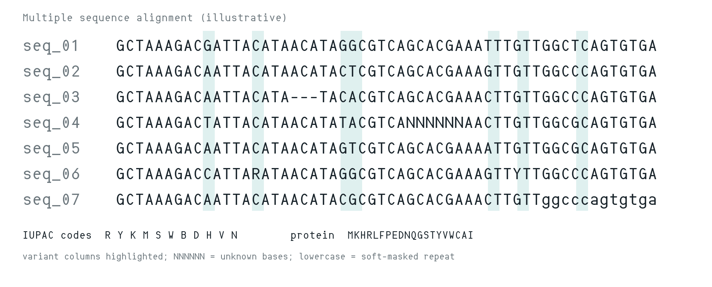
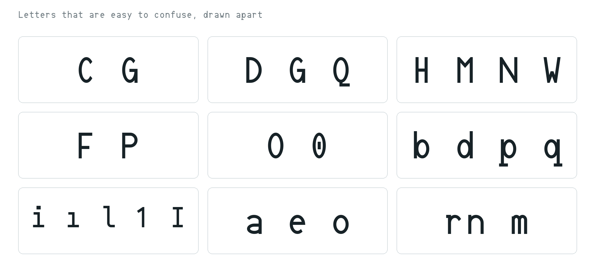
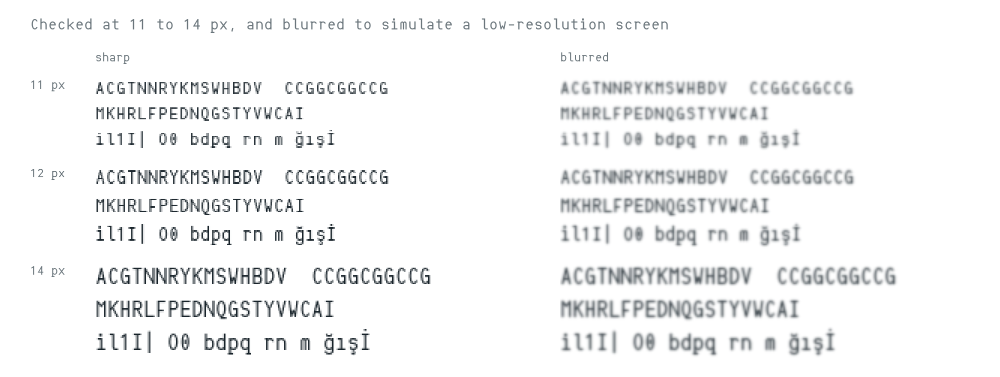

Allele Mono is a monospaced typeface for reading DNA, RNA and protein sequences, and code. In genetics, alleles are variant forms of a gene that look alike but must be told apart. Allele Mono is built around the same problem in type: letters that look alike at small sizes are drawn so that they stay distinguishable. To contribute, see github.com/aistanbulresearch/allele-mono.
Most monospaced typefaces are designed for source code, where words, punctuation and indentation give the eye context. Sequence data offers almost none. A DNA sequence uses four letters, repeated thousands of times, often in long runs of the same letter. In a multiple sequence alignment every column matters, and a single misread letter can suggest a variant that is not there, or hide one that is.
Other conventions add their own pressure. The IUPAC ambiguity codes (R, Y, K, M, S, W, B, D, H, V and N) put letters such as H, M, N and W side by side, and the twenty-letter protein alphabet brings pairs such as D and Q, or F and P. Case can carry meaning too: many genome files mark repeated regions in lowercase, so a lowercase letter that reads like its capital loses information. FASTQ files add lines of quality scores written in digits and punctuation. In all of these, the same few letters sit next to each other again and again, and the letters that matter most are often the ones that are easiest to confuse.

Allele Mono uses narrow, tall letterforms drawn with a single stroke weight. Narrow letters leave more space between neighbours in each fixed-width cell, so that long runs of the same letter are less likely to merge into a block. Each confusable group was then given features that set its members apart:
A stylistic set (ss01) offers an r shaped like a small capital R. It is off by default, because in code and in soft-masked sequences the case of a letter carries meaning.

Sequence viewers and alignment tools show many characters at once, so letters are often rendered at 11 to 14 pixels. Sequences are also read on projectors in lab meetings, over shared screens and remote desktops that compress the image, and in printed figures and posters. Under these conditions fine details are the first to disappear. Legibility at small sizes and at low resolution was therefore a design criterion from the start. Every change was checked by eye at 11 to 14 pixels, and confusable pairs were compared using blurred renderings that simulate a low-resolution screen, against other monospaced families on Google Fonts. This comparison is a rough proxy rather than a reading study, so it was always paired with checks by eye.

Geneticists and other professionals who work with sequence data reviewed the typeface during development, with particular attention to DNA and RNA sequences.
Allele Mono is available in ggmsa, an R package for plotting multiple sequence alignments with ggplot2, as font = "AlleleMono".
Allele Mono supports the Google Fonts Latin Core character set, including Turkish, along with auxiliary letters for several other European languages. Accents are placed with a mark feature, so any combining accent can be used on any letter, and a second accent stacks above the first.
Allele Mono was designed by Ozge A. Cavus of AIstanbul Research Group, a computational biology and AI research initiative based in Istanbul. An AI assistant (Anthropic's Claude) wrote the build code that generates the outlines and ran the legibility measurements; the designer set the goals and selected and approved every design decision.